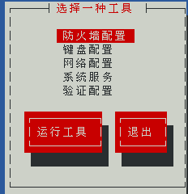
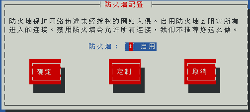
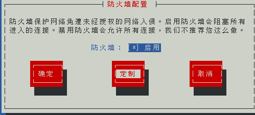
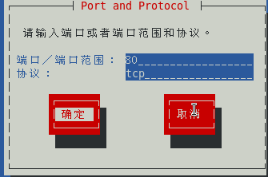
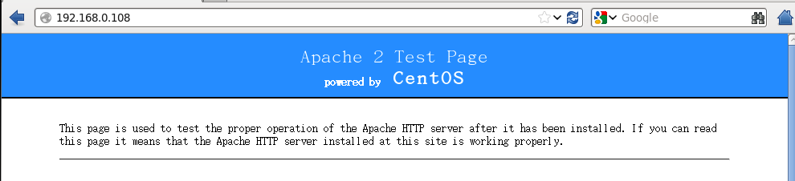

Apache安装
1、安装Apache，使用命令“yum install httpd -y”
|
[root@localhost
~]# yum install httpd -y
Loaded plugins:
fastestmirror, refresh-packagekit, security
Loading mirror
speeds from cached hostfile
base
| 4.0 kB 00:00 ...
Setting up
Install Process
|
2、启动apache
|
[root@localhost
~]# service httpd start
正在启动 httpd：httpd:
Could not reliably determine the server's fully qualified domain name, using localhost.localdomain
for ServerName
[确定]
[root@localhost
~]#
|
3、设置apache开机自启
|
[root@localhost
~]# chkconfig --level 5 httpd on
[root@localhost
~]# chkconfig --list httpd
httpd
0:关闭 1:关闭 2:关闭 3:关闭 4:关闭 5:启用 6:关闭
[root@localhost
~]#
|
4、修改防火墙
想要其他机器访问到该主机的apache，要么关闭防火墙，要么就修改防火墙的配置
1）关闭防火墙，
在终端输入setup命令
|
[root@localhost
~]# setup
|
弹出窗口，选择防火墙

弹出窗口，用空格关闭防火墙，保存退出（有*是启动）

2）修改防火墙配置，
在终端输入命令“setup”，在弹出的框中选择“防火墙”，接着选择“定制”

使用空格键选中“http“、”https“，接着选择“转发”

选择“添加“

添加端口80，协议tcp，然后确定

回到最初的界面，“确定”

重启防火墙
|
[root@localhost
~]# service iptables restart
iptables：将链设置为政策
ACCEPT：filter
nat
[确定]
iptables：清除防火墙规则：
[确定]
iptables：正在卸载模块：
[确定]
iptables：应用防火墙规则：
[确定]
[root@localhost
~]#
|
重启apache
|
[root@localhost
~]# service httpd restart
停止 httpd：
[确定]
正在启动 httpd：httpd:
Could not reliably determine the server's fully qualified domain name, using
localhost.localdomain for ServerName
[确定]
[root@localhost
~]#
|
5、测试，在其他局域网电脑输入本机的ip地址，看到如下界面代表apache安装成功

Copyright Email:zhytwj2018@163.com